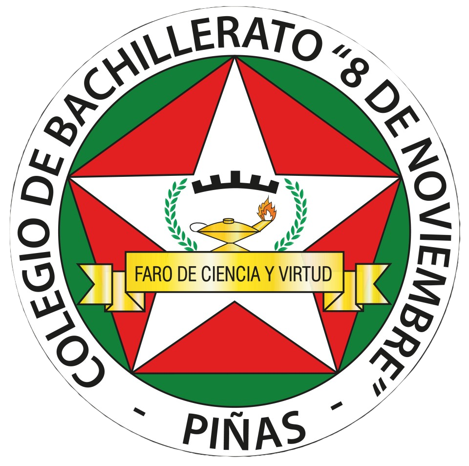

Universidad
Nacional
de Loja
Nacional
de Loja
CUENTOS DE
NUESTRA COMUNIDAD
CARRERA DE PEDAGOGÍA DE LAS CIENCIAS
EXPERIMENTALES INFORMÁTICA
Unidad
Educativa
"8 de noviembre"
Educativa
"8 de noviembre"
